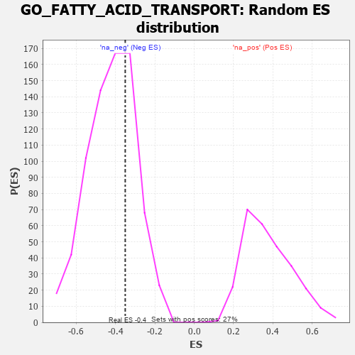

| | | Dataset | 7d |
| Phenotype | NoPhenotypeAvailable |
| Upregulated in class | na_neg |
| GeneSet | GO_FATTY_ACID_TRANSPORT |
| Enrichment Score (ES) | -0.3510159 |
| Normalized Enrichment Score (NES) | -0.83693194 |
| Nominal p-value | 0.6894665 |
| FDR q-value | 0.9810078 |
| FWER p-Value | 1.0 |
Table: GSEA Results Summary
 Fig 1: Enrichment plot: GO_FATTY_ACID_TRANSPORT
Fig 1: Enrichment plot: GO_FATTY_ACID_TRANSPORT
Profile of the Running ES Score & Positions of GeneSet Members on the Rank Ordered List
| PROBE | GENE SYMBOL | GENE_TITLE | RANK IN GENE LIST | RANK METRIC SCORE | RUNNING ES | CORE ENRICHMENT | | 1 | AKT1 | | | 1040 | 0.476 | -0.0310 | No |
| 2 | SYK | | | 2186 | 0.278 | -0.1166 | No |
| 3 | MIF | | | 2357 | 0.252 | -0.0851 | No |
| 4 | ACSL4 | | | 3632 | 0.055 | -0.2337 | No |
| 5 | ABCD1 | | | 3677 | 0.047 | -0.2294 | No |
| 6 | NMUR2 | | | 4646 | -0.127 | -0.3243 | Yes |
| 7 | P2RX4 | | | 4813 | -0.161 | -0.3114 | Yes |
| 8 | ABCD3 | | | 4829 | -0.164 | -0.2790 | Yes |
| 9 | DRD2 | | | 5088 | -0.221 | -0.2650 | Yes |
| 10 | CPT1A | | | 5467 | -0.311 | -0.2473 | Yes |
| 11 | FABP4 | | | 5509 | -0.322 | -0.1849 | Yes |
| 12 | CPT2 | | | 5611 | -0.348 | -0.1247 | Yes |
| 13 | ABCD4 | | | 6349 | -0.597 | -0.0922 | Yes |
| 14 | ACE | | | 6526 | -0.674 | 0.0269 | Yes |
| 15 | ACSL5 | | | 6643 | -0.737 | 0.1669 | Yes |
Table: GSEA details [plain text format]

Fig 2: GO_FATTY_ACID_TRANSPORT: Random ES distribution
Gene set null distribution of ES for GO_FATTY_ACID_TRANSPORT